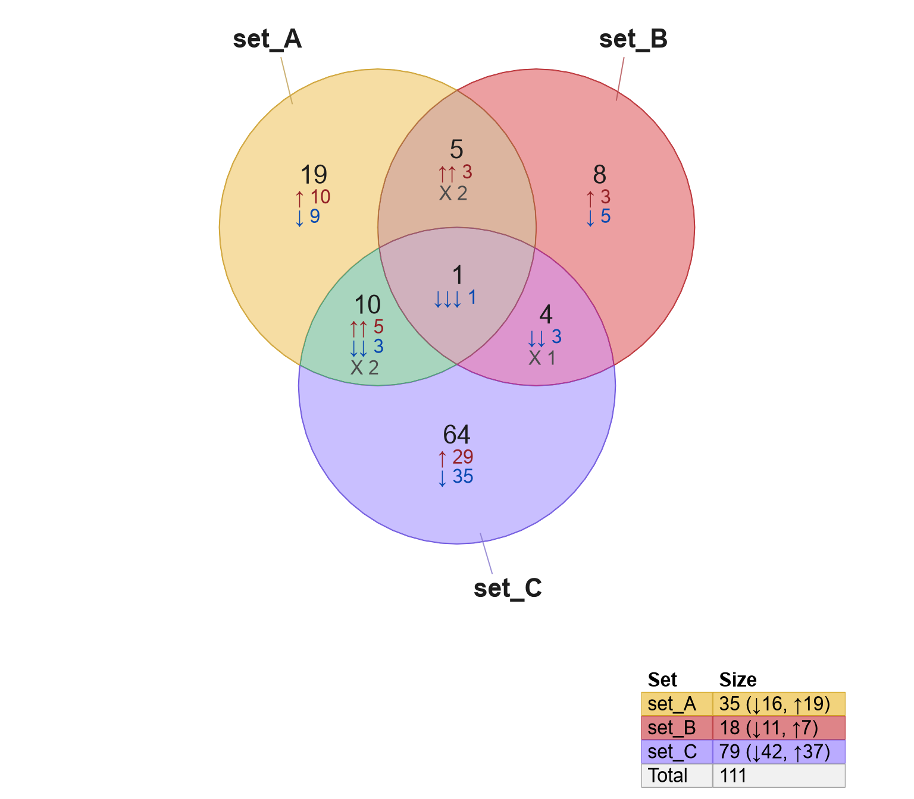
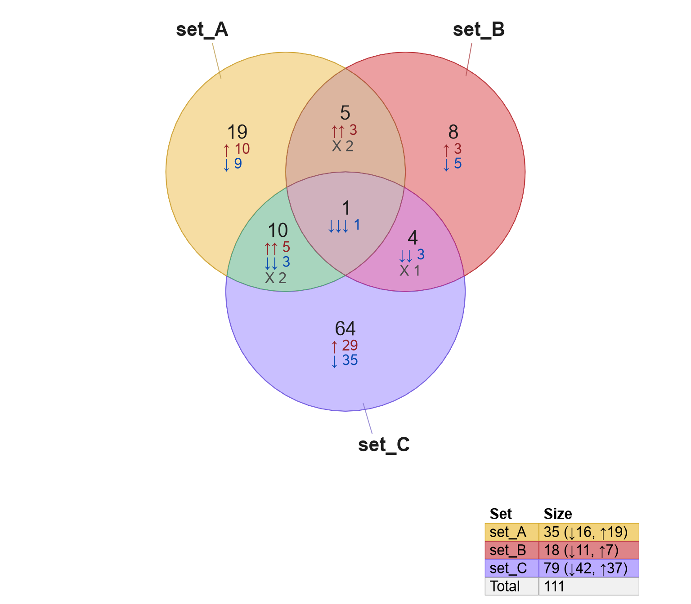

3.3 Venndir Labels
3.3.1 Label Content
The term 'label' may refer to many elements of a Venndir figure. Of course, the sets have labels, and Venn overlap counts have labels. When using signed data, there are also signed count labels. There are also optional labels such as percent overlap, and even individual item labels. In future, there may be additional labels such as Jaccard overlap, Kruskal's directional concordance, or z-score of directionality.
There are so many types of labels, it became unwieldy to assign
a separate function argument for each label, which is why
labels are controlled by one argument: show_labels.
Each type of label is assigned a letter, and is described in 3.1.
| Label | Letter | Notes |
|---|---|---|
| Name | 'N' or 'n' | The set name provided in 'setlist'. |
| Count | 'C' or 'c' | The count of the number of items in each Venn region. This label is sometimes referred to as 'main count' or 'overlap count'. |
| Signed | 'S' or 's' | The count of the number of items by each observed combination of signs. |
| Percent | 'P' or 'p' | The percent of items in each Venn region, related to the total items represented in the diagram. |
| Item | 'i' | The item labels represented in each Venn region. Items can only be displayed inside the Venn diagram. |
Including the respective letter will enable that label. Using UPPERCASE places the label outside, and using lowercase places the label inside the Venn diagram.
The default show_labels="Ncs" places the Name outside, then
counts and signed counts inside.
Tip:
For those who like to see the percentage, a good default would be
show_labels="Ncsp". For clarity, the percentage is always located
with main counts, unless the main counts are not shown.
Currently, item labels can only be placed inside. In future it may be possible to show items in a table beside the Venn diagram.
Figure 3.14 illustrates common examples for show_label,
showing how the components of each label are grouped together.
Figure 3.14: Four examples of various Venndir labels, placed inside or outside each figure. The label components are grouped by location, then organized in a defined way.
3.3.2 Overlap Type
The argument overlap_type provides different approaches to
summarize directional overlaps. This option determines which
count labels will be displayed in the Venndir figure.
The different options are summarized in Table 3.3.
| overlap_type | Description |
|---|---|
| 'overlap' | Only the summary overlap counts are displayed. |
| 'concordance' | The summary overlap counts are displayed. Signed counts are tabulated for overlaps involving one direction. All other signed counts are summarized with 'X' for discordance. |
| 'each' | The summary overlap counts are displayed. Signed counts are tabulated for each combination of signs observed. |
| 'agreement' | The summary overlap counts are displayed. Signed counts are tabulated based upon agreement or disagreement of the directional sign. |
- When the input
setlistis not signed,overlap_type='overlap'is the default. - When the input
setlistis signed,overlap_type='concordance'is the default.
Figure 3.15: Venn diagrams showing four overlap types recognized: 'overlap' (default for non-signed data), 'concordance' (default for signed data), 'each', and 'agreement'.
3.3.3 Signed Label Placement
Signed count labels are placed beside main count labels by default, however they can be placed below main count labels.
The argument template controls the signed label placement,
and there are two options, illustrated in Figure 3.16.
template='wide'(default) labels signed counts beside main overlap counts.template='tall'labels signed counts below main overlap counts.
setlist3 <- make_venn_test(n_sets=3, do_signed=TRUE)
vt1 <- venndir(setlist3)
vt2 <- venndir(setlist3, template="tall") 

Figure 3.16: Venn diagram with signed counts beside each overlap count (left) defined by the default argument template='wide', and with signed counts below overlap count (right) defined by template='tall'.
3.3.4 Visual Styles
By default, Venn count and set labels are drawn without any particular
color shading or border. The argument label_style is used to enable
background color fill, and optional border.
The recognized keywords for label_style:
"lite"- light background"shaded"- semi-transparent shaded color background"fill"- full color background"box"- draw a box as a border around the label
A straightforward example is shown in Figure 3.17
using label_style="lite box" with signed counts.
Figure 3.17: Venn diagram showing signed counts, using label style 'lite box'.
Figure 3.18 illustrates several possible styles. In general, when using a fill color with any of the options 'lite', 'shaded', 'fill', it may be preferred to add 'box' to include a visual border. For example, try 'lite box' or 'shaded box'.
Figure 3.18: Venn diagrams showing the different label style options in each of four panels.
3.3.5 Nudge a Venn Label
To nudge, that is to reposition, one label in a Venndir diagram,
use nudge_venndir_label().
Note that venndir() will define a label position for every Venn overlap,
and defines a position 'inside' and 'outside' the Venn region.
Key Point:
The exception to the rule that every overlap has a label position occurs when a Venn overlap cannot be represented in the diagram, which sometimes happens in proportional Euler diagrams. For a discussion of that issue, see Hidden Overlaps.
To nudge a label, define the label to nudge using these two arguments:
set- the overlapping region to nudgelabel_location- the inside or outside label associated with that set
The label adjustment uses two coordinates. Units are proportional
to the overall Venndir plot region, where 1 is the full width
or height of the plot, whichever is larger.
x_offsety_offset
The process requires an existing Venndir object.
In the example below, a simple 3-way Venn diagram is stored
in variable v.
The label for 'set_C' is moved left (decreasing the x coordinate),
and up (increasing the y coordinate).
# default Venn
setlist <- make_venn_test()
v <- venndir(setlist)
# nudge 'set_C' up-and-left
v2 <- nudge_venndir_label(v,
x_offset=-0.45, y_offset=0.25,
set="set_C",
label_location="outside")
plot(v2)Figure 3.19 shows the Venn with
default labels (left panel), and with 'set_C' adjusted (right panel).
Figure 3.19: Default 3-way Venn diagram (left), with label 'set_C' moved up and to the left (right).
Notice that after the label is adjusted, the new Venndir object v2
can be visualized using plot().
3.3.6 Details for Label Placement
A detailed description of the labeling rules are described below.
In principle, each Set is represented by a circle or ellipse, therefore the Set label refers to the circle itself. In practice, Set label placement is not straightforward when the circle is embedded inside another circle. It should be visually clear which circle is being described, and sometimes that in itself is hard to describe!
Venndir uses two strategies to help reinforce this relationship:
- Set labels are placed with specific rules, see below.
- Set labels and colors are described in the Venndir legend.
The rules are described below:
Set labels are directed to the most specific region in the Venn or Euler diagram.
- In a Venn diagram, this region will always be "unique to set_A", with no other overlapping sets.
- In a Euler diagram, this region will be "unique to set_A" if it exists, otherwise it will be the region with "set_A" and the fewest other overlapping sets.
- Specifically, if
"set_A"is fully inside"set_B", the label for"set_A"will be associated with the overlap"set_A&set_B".
Count labels will only be associated with the specific overlap region.
- If the specific overlap region does not exist in the figure, the count label is not shown. For more discussion, see Hidden Overlaps.
- If the overlap contains only one set, it will be grouped together with the Set name if the Set name is in the same location: 'inside' or 'outside'.
- If the counts are displayed outside, line segments will connect each label to the corresponding region.
- The argument
inside_percent_thresholdmay be used to place a label outside when the region is small.
Percentage labels are shown together with main counts when main counts are shown.
- The percentages are calculated directly from the main counts, and it would be confusing if they did not appear together.
- When main counts are hidden, the percentage may be placed either inside or outside.
Items labels can only be displayed inside.
- Count labels are only displayed inside when items are not displayed inside.
- When the number of items exceeds
max_itemsthen items are hidden, and the count labels may be displayed in their place. - Set names may be displayed inside, together with item labels, however no effort is made to prevent overlapping labels. The general recommendation is to place set names outside, or to adjust the Set labels placement as described in Nudge a Venn Label.